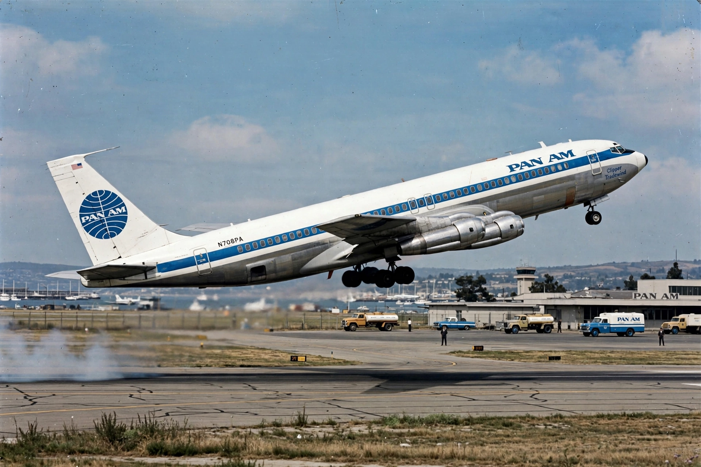

Boeing 707
From Wikipedia, the free encyclopedia

A 707 in Pan Am colours.The Boeing 707 is an American long-range narrow-body jet airliner developed and produced by Boeing Commercial Airplanes, and the aircraft that truly launched the jet age. Derived in secrecy from the 367-80 prototype (\'Dash 80\', 1954), the 707 entered service with Pan Am in October 1958, and with its swept wing and four podded turbojets it made jet travel fast, glamorous and — with 865 delivered — commercially decisive. Military derivatives (KC-135, E-3 AWACS) still fly in numbers.
Development
Boeing bet $16 million — a huge share of its worth — on the Dash 80, demonstrating it with a famous barrel roll over Seattle in 1955 (test pilot Tex Johnston). Pan Am\'s launch order forced a wider fuselage to match the DC-8; variants grew from the 707-120 to the longer 707-320 Intercontinental.
Service
The 707 shrank the Atlantic to under 8 hours and defined 1960s air travel (Sinatra\'s \'Come Fly with Me\' era, the Jet Set). Airlines worldwide flew it; the type also became Air Force One (VC-137) for presidents Kennedy through George H. W. Bush. Noise rules retired it from Western passenger service by the 1980s–90s, though freighters and military versions soldiered on.
Legacy
The 707\'s formula — swept wing, podded engines, tube-and-wing — remains the default airliner shape. Its success funded Boeing\'s later programmes and established the US industry\'s post-war dominance challenged only by Airbus.